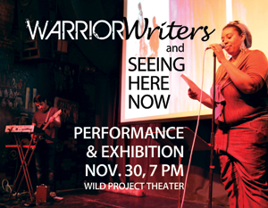

past performance | ||
|  |
Warrior Writers NYC Performances // Seeing Here Now’s Photography Exhibition // Call & Response Collaborations This event is held jointly by Warrior Writers NYC and Seeing Here Now. | |
|
In a powerful public performance, Warrior Writers NYC will showcase several veteran artists performing works developed in conjunction with Warrior Writers NYC. The presented work will have writing as its foundation, but bring music, movement and visual imagery into layered narratives that bring veterans' stories and poems to life. Participants from Warrior Writers NYC, Seeing Here Now and NYU Veterans Writing Workshop recently partnered on a Call & Response project whereby photographs served as writing prompts. The resulting poetry and narrative prose pieces then acted as photographic prompts - thus closing the collaborative loop. The resulting collaborations, which will also be performed, are visually stunning and emotionally evocative works of art. Lastly, the photography exhibition showcases the individual work of ten Seeing Here Now veteran workshop participants. The photographic styles and subjects reflect the unique vision of these military personnel as they consider the home front after returning from war. The works vary broadly — from classic landscapes to staged personal narratives; from night photography to abstraction. This event is made possible in part with public funds from the Fund for Creative Communities and the Manhattan Community Arts Fund supported by New York State Council on the Arts and the New York City Department of Cultural Affairs in partnership with the City Council, and administered by Lower Manhattan Cultural Council. | ||
upcoming performances |
|||
 |
|||
| EVQ Film Festival 2018 August 20-25 |
|||
performance archives |
|||
| 2018 | 2017 | 2016 | 2015 |
| 2014 | 2013 | 2012 | 2011 |
| 2010 | 2009 | 2008 | 2007 |